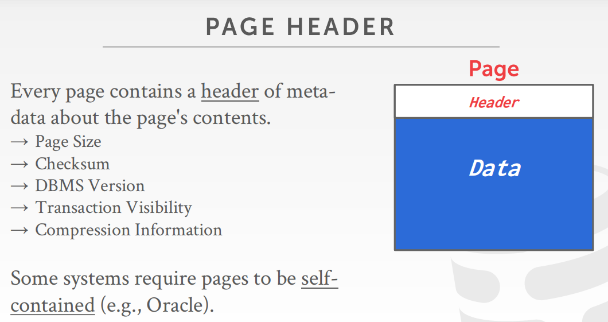
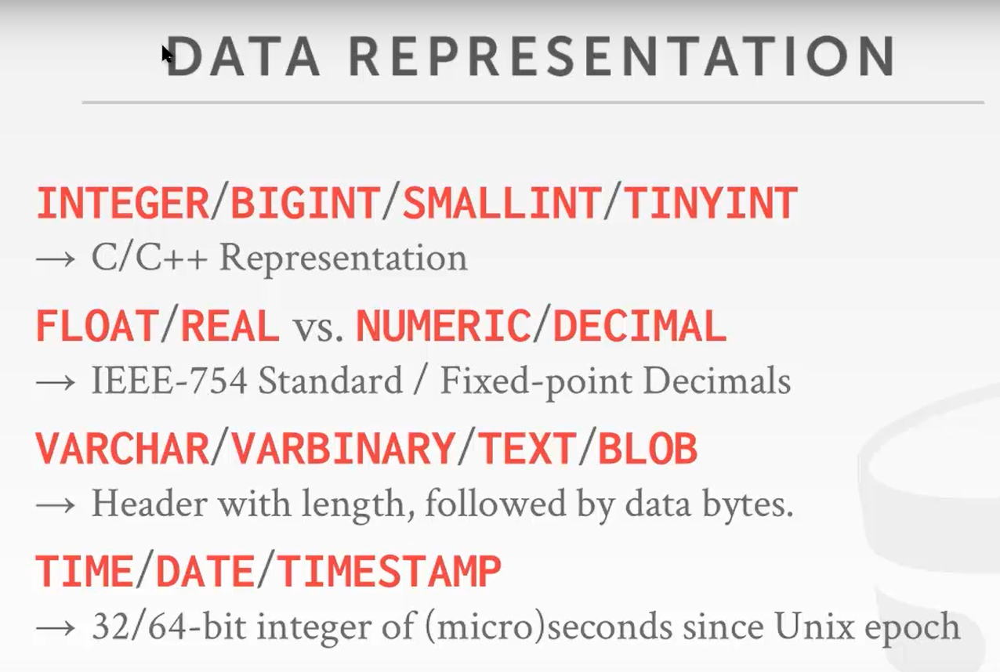

Database Storage
Database Storage I
1. 存储分层
大部分数据库中的数据是在硬盘中的，用户操作数据时需要把数据加载到内存中，最后将修改后的数据重新写入硬盘。数据库存储模块就需要管理数据库从磁盘到内存中流动的过程。
在存储层次结构中，离CPU最近的设备是CPU寄存器，它是最快也是最小最贵的存储，其次是CPU缓存和DRAM。离CPU越远存储设备就越大越慢，但是也越便宜，如：固态硬盘，机械硬盘和网络带宽。
易失性存储
- Examples: CPU Registers, CPU caches, DRAM
不稳定，一掉电数据就会丢失
支持随机访问，程序可以按字节访问任意地址获取数据
通常将这类存储称为“内存”
非易失性存储
- Examples: SSD, HDD, Network Storage
- 断电后数据不丢失
- 按块/页寻址，比如：块的大小为1KB，就算要存储1字节数据也需要耗费1 KB的空间。按块存储没办法获取到具体某一个字节的数据，读的时候只能把整个块读到内存当中，再进行解析逐个读取；修改也是同理，都是以块为单位进行存取
- 顺序存储，可以同时读取多个连续的数据块
- 通常将这类存储称为“磁盘”
有一些比较新的存储设备，如Non-volatile Memory，字面理解为“非易失性内存”，又快有可以保证磁盘持久性，但这种设备目前还没有广泛的生产使用。
由于DBMS体系结构假定数据库存储在磁盘上，因此DBMS的组件负责确定如何在非易失性磁盘和易失性内存之间移动数据，因为系统不能直接在磁盘上操作数据，这样性能会非常差。从磁盘获取数据非常慢。如果从L1缓存读取数据需要半秒，那么从SSD读取数据则需要1.7天，从HDD读取数据需要16.5周。
其中Tape Archives是磁带盘，一小块可以存储几十个G，数据用磁头写入到磁带，容量超大但读取超慢。但是磁性存储是最不容易损坏的，只要不经常读取，这种存储性质是非常稳定的，多用来做不重要的数据备份与存档。
存在内存中需要100 m，而存到内存上需要1.7天，所以不可能把所有数据实时存储到内存中。我们将专注于隐藏磁盘的延迟，而不是使用寄存器和缓存进行优化，
不同存储设备访问时间：
随机存取和连续存储
一般来说连续存取要比随机存取快得多得多。用户的存取都是随机的，尽量把随机存取转换成数据库对磁盘的连续存取。
如：可以先缓存用户的部分查询内容，再找一个合适的时间一次性写入磁盘
存储引擎的设计目标
机器只有8个G的内存，不能说只能存储8个G的数据，可能磁盘有10个G的容量。要允许用户存储大于8个G的数据，在内存中管理巨大的数据库
坏的设计：假设一份PPT很大，把数据全部加载到内存中的时间很长，甚至不能全部加载到内存中
好的设计：PPT可以逐页加载到内存中
读写磁盘的代价是巨大的，需要小心管理数据存取，不要让数据库经常读写磁盘
尽量要把随机的读取转换成顺序的读写
2. 面向硬盘的关系型数据库
不论数据库设计再复杂，最终数据都要落在硬盘中的某个文件，也就是说数据在硬盘中的存储形式是文件
一个文件会被分成多个页，第一页是目录页，指明哪个数据在哪个页上，页有固定的大小。每个页中含有一个Header，用来解释数据的一些属性。
数据库需要将数据存入内存，它有一个缓冲池来管理数据在磁盘和内存之间来回移动。
-为什么是一个池呢？因为需要控制数据库的大小
数据库需要执行引擎（执行器）来执行查询，执行引擎将向缓冲池请求特定页面，而缓冲池负责将该页面放入内存，并在内存中给执行引擎一个指向该页面的指针
假设执行器要读取一个表，发现数据应该在文件中的第二页。它会去缓冲池里面找。缓冲池会将文件目录加载到内存中，找到了第二页的位置，再去磁盘中拉取第二页的内容到内存，那么执行器就会对第二页进行一些解析与操作。
数据库存储：数据库是如何在硬盘中是如何表示成文件的？（静态的表现）
3. File storage
数据库把用户数据存储在磁盘中的一个或多个文件中。操作系统不知道也不关心文件的内容，这些内容以数据特有的方式进行编码。
存储管理器（Storage Manager）负责管理或维护数据库里的文件，一般会把文件当成一组页的集合，它还跟踪哪些数据被读取和写入页面，以及这些页面中有多少空闲空间。
4. Database pages
DBMS跨一个或多个文件组织数据库，这些文件是固定大小的数据块，称为页，数据库文件太大了，不可能把文件当成一个单元进行管理。
- 这些数据块可能包含tuple，indexes，log records这些内容
- 每个数据库的页都是功能固定的，大多数系统不会在页面中混合存储
- 一些系统要求页是自解释的，这意味着读取每个页面所需的所有信息都在页面本身
- 每一个页都有唯一的标识符id。如果数据库是一个文件，那么页面id可以只是文件偏移量
大多数DBMS都有一个间接层，将页面id映射到文件路径和偏移量。系统的上层会请求一个特定的页码。然后，存储管理器必须将页码转换为一个文件和一个偏移量来找到该页
有三个不同的层面“页”概念：
硬盘页: 4 KB
一个机械磁盘往往是4 KB一个块，有一些SSD块大小可能为0.5 KB，是最小的可以保证原子操作的单位,，即要么全部写入，要么全部不写入
这意味着，如果数据库页面比硬件页面大，DBMS将不得不采取额外的措施，以确保安全地写入数据，因为当系统崩溃时，程序可以在将数据库页面写入磁盘的过程中中途完成。
操作系统页: 4 KB
应用软件没有办法和硬件直接交互，需要先存进OS，再由OS与硬盘交互
数据库页: 512 B-16 KB
大多数DBMS使用固定大小的页面，以避免支持可变大小页面所需的工程开销。例如，对于大小可变的页面，删除一个页面可能会在文件中创建一个空洞，而DBMS无法轻易地用新页面来填充这个空洞。
数据库应用自己定义的存取数据的最小单位，512 B可能是一些便携式设备（手机或嵌入式操作系统）。数据库页16KB取硬盘和操作系统页的整数页，常见数据库的页大小如下：
- 4 KB: SQLite, DB2, ORACLE
- 8 KB: SQL Server, PostgreSQL
- 6 KB: MySQL
5. Database heap
有几种方法可以找到DBMS需要的页面在磁盘上的位置，堆文件组织就是其中一种方法。堆文件是一个无序的页面集合，其中元组按随机顺序存储
堆文件，一堆无序的页，每页存储了一些数据（随机/顺序）。这个页需要有增删改查的功能，还要支持迭代遍历所有的页。
通过使用页链表或页目录，DBMS可以在给定页id的情况下定位磁盘上的页：
linked list: 头页 包含指向 空闲页面列表 和 数据页面列表的指针。如果DBMS正在寻找一个指定的页，它必须对数据页面列表顺序扫描，直到找到该页
page directory: DBMS维护的特殊的页，这些页跟踪数据页的位置以及每个页上的空闲空间量
6. Page Layout
Page Header
每一页中有一个数据头，其中包含一些元数据 
- 页大小
- 检验和：检查数据是否丢失
- 数据库版本：数据库升级时，有可能它们不兼容
- 事务可见性：事务和并发相关
- 压缩信息：数据页在存储时通常是被压缩的
在一个页中是如何存储元组的？
跟踪DBMS在一个页面中存储了多少元组，然后在每次添加一个新的元组时将其附加到末尾。但是，当元组被删除或元组具有可变长度的属性时，就会出现问题。
Q1：删除一个元组会怎么样？
Q2：存储一个可变长度的数据怎么办？
数据的组织形式: 槽页面和日志结构
slotted pages：页面将插槽映射到偏移量，页里存储的是数据
DBMS中最常用的方法
Header记录了使用的槽数，最后一个使用的槽的起始位置的偏移量，以及一个槽数组，它记录了每个元组的起始位置。
添加一个元组，槽数组将从开始到结束增长，元组的数据将从结束到开始增长。当槽数组和元组数据满足时，该页被认为是满的。
log structure: DBMS只存储日志记录，不存储元组，页里存储的是操作日志
- 将数据库如何被修改(插入、更新、删除)的记录存储到文件中。
- 为了读取一条记录，DBMS会反向扫描日志文件并“重新创建”元组。
- 写得快，读得慢。
- 适用于仅追加存储，DBMS不能返回和更新数据。
- 为了避免长时间的读取，DBMS可以有索引来允许它跳转到日志中的特定位置。它还可以周期性地压缩日志。(如果它有一个元组，然后对它进行了更新，它可以将其压缩到只插入更新后的元组)压缩的问题是DBMS最终会产生写放大(它一遍又一遍地重写相同的数据)
日志压缩
日志结构文件：元组中存的不是数据本身，而是数据的变化（LOG)
新增
删数据不是删除数据，而是写一条日志说明哪条数据被删除
修改数据是新写入一条LOG说明数据被修改了
例：存的不是数据本身，存的是数据的变化
如何从日志中读数据呢？
需要重放LOG，把和这个数据相关的所有LOG找出来，推断并进行回放。往往是从最新的LOG向最旧的寻找，直到该条数据操作的时候。为了提升查找效率，可以添加类似索引的内容。
这样下去，数据修改的次数多了数据库中的LOG会变得非常庞大，通常情况下会周期性地压缩LOG：
DELETE id =4 为什么压缩不了呢？因为插入的数据不在该页内
什么样的数据库使用这种压缩机制呢？HBASE、cassandra、levelDB、RockDB
这种机制大多用在kv数据库上，因为一条数据只有一个键一个值；如果只关系型数据库，一条记录只记录修改一个字段，还需要寻找表中的其他字段。
压缩的其他方法
Level Compaction（按层压缩）
如果一个数据的插入语句和修改（删除）不在一个页上，内部压缩是压缩不了的。可以将两个块合并后再进行压缩（RockDB基本原理，最多能压缩到第七层）
如何读数据？从第0层开始读，如果没有数据内容，再去寻找第1层，一直找到第7层。
Universal compaction（不分层压缩）
同级压缩，是通用的压缩方法：
LOG的好处
插入时可以将随机写转换成顺序写。修改k =100的数据（数据页读+改+写回），新建最新的块向里面写日志，但是读数据和压缩时比较麻烦。
7. Tuple Layout
tuple在磁盘上的表现是一组二进制字节，数据库的工作就是将这些数据编码好放在磁盘上（解释为属性类型和值）
Tuple Header
DBMS并发控制协议的可见性信息(例如，关于哪个事务创建/修改了那个元组的信息)
NULL值的位映射：数据库列中的数据可以存null，header中往往有一堆二进制位表示后面的数据是不是null
数据与数据是连续存储的，为避免读错数据要记录下哪个字段存的是null
注：不需要存储关于数据库模式的元数据 | tuple里面不需要存储表结构
元组数据
属性的实际数据，属性通常按照创建表时指定的顺序存储
大多数DBMS不允许tuple超过一个page的大小
唯一识别符
数据库中的每个元组都被分配一个唯一的标识符，在全局寻找数据时使用
一般的计算方式为：
page_id + offset/slot应用程序不能依赖这些id来表示任何东西，record id是数据库内部的一个id，在外部只能用主键这些来查找
-PostgreSQL使用6-bytes的CTID来表示
-SQLite使用8-bytes的ROWID来表示
-ORACLE使用10-bytes的ROWID来表示
非规范化元组数据
如果两个表是相关的，DBMS可以“预连接”它们，这样两个表最终会在同一个页面上。这使得读取速度更快，因为DBMS只需要加载一个页面，而不是两个单独的页面。但是，由于DBMS需要为每个元组提供更多的空间，因此更新成本更高。
Database Storage II
1.数据的表现形式
元组中的数据本质上就是字节数组，DBMS应该知道如何解释这些字节来获得属性的值，数据表示方案是DBMS存储值的字节的方式。 
有五种高级数据类型可以存储在元组中：
1.1 Integers
- Examples: INTEGER, BIGINT, SMALLINT, TINYINT
大多数DBMS使用IEEE-754标准所指定的原生C/ C++类型来存储整数，这些值是固定长度的。
1.2 Variable Precious Numbers
- Examples: FLOAT, REAL
对变精度数字的操作比任意精度数字的运算速度更快，因为CPU可以直接对它们执行指令。然而，由于某些数字无法精确表示，在进行计算时可能会出现舍入误差
如计算可变精度浮点数是 0.1+0.2 是否与0.3 相等：
1 | |
结果输出，小数点后六位：
1 | |
输出小数点后20位：
1 | |
结果输出，可以发现并不是完全相等
1 | |
所有关于钱的数据，是不允许使用这种可变浮点FLOAT的，比如在Java中可用BIGDECIMAL。
1.3 Fixed-Point Precision Numbers
- Examples: NUMERIC, DECIMAL
这些是具有任意精度和比例的数值数据类型。它们通常以精确的、可变长度的二进制表示形式存储(几乎像字符串一样)，以及附加的元数据，这些元数据将告诉系统数据的长度和小数点应该在哪里。当舍入错误不可接受时，使用这些数据类型，但DBMS为获得这种准确性付出了性能代价。
Example1: PG中NUMERIC的表示形式
Example2: MySQL中NUMERIC的表示形式
- 数据多少位/权重/指数/正负零/指针指向char，是一个字符串
1.4 Variable-Length Data
- Examples: VARCHAR, VARBINARY, TEXT, BLOB
这些表示任意长度的数据类型。它们通常与一个记录字符串长度的头文件一起存储，以方便跳转到下一个值。它还可以包含数据的校验和。
大多数DBMS不允许元组的大小超过单个页面的大小。那些将数据存储在一个特殊的“溢出”页面上，并让元组包含对该页面的引用的对象。这些溢出页可以包含指向其他溢出页的指针，直到可以存储所有数据为止。
有时会存储超长的数据，可能比数据库的一个页还长。这种情况通常使用 溢出页 来存储数据。如果数据特别长，会单开辟一个页进行存储。
不同的数据库触发溢出页的条件也有所不同：
- Postgres：数据大于2KB（一个页6KB）
- MySQL: Overflow（大于1/2个页，一个页18 KB）
- SQL Server: Overflow（大于整个页，一个页最少要存一行数据）
如果溢出页也没存下？向后添加溢出页。但是尽量不要存储过长的数据， 存取一次磁盘只能拿到一页的数据。如果存储图片，需要存储url，不要直接存储图片数据。
也可以将很大的数据存储到外部文件，系统或者别的软件可能修改它，数据库无法保证这个文件没有被修改过。更好的方法是用户根据业务自行管理链接到数据库的外部文件。
有些系统允许您将这些大的值存储在一个外部文件中，然后元组将包含一个指向该文件的指针。例如，如果数据库正在存储照片信息，DBMS可以将照片存储在外部文件中，而不是让它们占用DBMS中的大量空间。这样做的一个缺点是DBMS不能操作这个文件的内容。因此，不存在持久性或事务保护。
1.5 Dates & Times
- Examples: TIME, DATE, TIMESTAMP
日期/时间的表示因系统而异。通常，这些被表示为某个单位时间(微/毫秒)Unix时代以来的秒数。
SYSTEM CATALOGS
为了使DBMS能够破译元组的内容，它维护一个内部编目来告诉它关于数据库的元数据。元数据将包含关于数据库有哪些表和列以及它们的类型和值的顺序的信息。大多数DBMS将它们的目录以它们用于表的格式存储在自己内部。它们使用特殊的代码来“引导”这些目录表。
存储系统的元数据，一般都当做系统表存储起来，不需要其他数据存储的形式，如：
- 表结构 行结构 索引 视图
- 用户 权限
- 内部统计信息
几乎所有的数据库都自己管理catalog，以表的形式自己存储自己。一般的数据库中都有一张INFORMATION_SCHEMA表，其中存储着数据库中各种元信息。
查看数据库中表结构的原信息命令（查看当前数据库中的表）
1 | |
2.数据库类型
2.1 OLTP
在线事务处理：快速读写数据量很小的数据，往往意味着高并发（用户使用）
OLTP工作负载的特点是快速、短时间运行的操作、一次操作单个实体的简单查询和重复操作。OLTP工作负载通常会处理更多的写操作而不是读操作。
-Example: Amazon店面。用户可以将东西添加到购物车中，可以进行购买，但这些行为只会影响他们的账户
2.2 OLAP
在线分析处理：复杂查询，读取大量数据并做一些复杂计算（公司使用）
OLAP工作负载的特点是长时间运行、复杂的查询和读取数据库的大部分内容。在OLAP工作中，数据库系统从OLTP端收集的现有数据中分析和导出新数据。
-Example: Amazon计算这些地理位置在一个月内购买最多的五件商品
2.3 HTAP
HTAP是事务处理与分析处理的混合型数据库(Hybird Transaction + Analytical Processing)
事务型的倾向于写，分析性的越集中于读
HTAP没有出现时的通常做法：先从OLTP数据库中抽取数据做ETL，再放进数据仓库进行分析，最后把分析的结果写回到OLTP供用户查询。
HTAP的出现可以兼顾这两种工作情况，不必进行数据移动，节约资源与空间
行列存储
关系模型没有规定我们数据要按行存储（在底层），用户只是想按行查找，所以数据页中不一定一个Tuple是一行。
例：
OLTP语句：
1.查询页面的更新记录
1 | |
2.用户更新资料
1 | |
3.新增更新记录
1 | |
OLAP语句:
做复杂分析操作
1 | |
3.数据存储模型
在页面中存储元组一般有行存和列存两种方法
3.1 NSM
如果一行是一个存储单位，就叫做n-ary storage model（NSM)
n-ary存储模型中，DBMS将单个元组的所有属性连续存储在单个页面中，因此NSM也被称为“行存储”。这种方法对于OLTP工作负载非常理想，在这种负载下，请求需要大量插入，事务往往只操作单个实体。它是理想的，因为它只需要一次获取就能够获得单个元组的所有属性。
一个单独的Tuple，保存着一组属性，组成了一组行记录。这种数据存储结构，按行存储更适合OLTP。

列存更适合OLAP：
如果是行存储，无用的数据也需要取出并解析： 
行存优点
- 可以快速插入，更新和删除
- 对整行数据查询支持地比较好
行存缺点
- 不适合扫描表的大部分和/或属性的子集。这是因为它会获取处理查询不需要的数据，从而污染缓冲池
3.2 DSM
拆开存储，通俗来讲叫做列存，一个tuple存的是一列，列存是分析友好的。
在分解存储模型中，DBMS将所有元组的单个属性(列)连续地存储在一个数据块中。因此，它也被称为“列存储”。这个模型非常适合OLAP工作负载，其中有许多只读查询，这些查询在表属性的一个子集上执行大的扫描。
Tuple定义
在使用列存储时，要将元组放回一起，有两种常见的方法：
固定长度偏移量：假设属性都是固定长度的，DBMS可以为每个元组计算属性的偏移量。当系统需要特定元组的属性时，它知道如何从offset跳转到文件中的该位置。为了适应变长字段，系统可以填充字段，使它们都具有相同的长度，或者使用一个接受固定大小的整数并将该整数映射到值的字典。
嵌入式tuple id：在这里，对于列中的每个属性，DBMS存储一个元组id(例如:一个主键)。系统还会存储一个映射，告诉它如何跳转到每个具有该id的属性。注意，这个方法有很大的存储开销，因为它需要为每个属性条目存储一个tuple id。
DSM优点
- 减少了查询执行过程中浪费的工作量，因为DBMS只读取该查询所需的数据
- 支持更好的压缩，因为相同属性的所有值都是连续存储的
DSM缺点
- 由于元组分割/拼接，点查询、插入、更新和删除速度较慢
updated: 2021-07-03